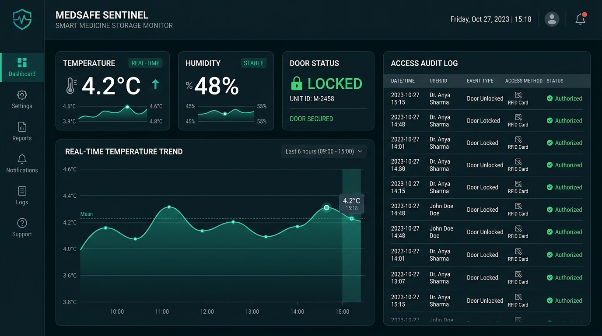
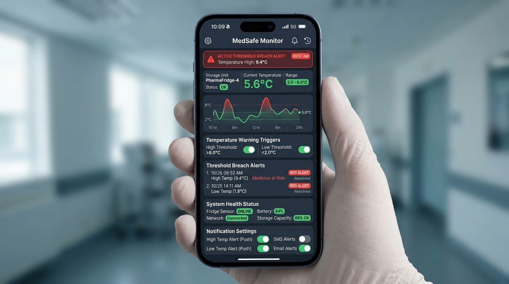

About
Temperature-sensitive pharmaceuticals such as vaccines, insulin, biologics, and lab reagents require strict thermal stability—typically between 2°C and 8°C. Conventional medical storage units often lack continuous telemetry, automated alerting, and physical access controls, creating significant vulnerability to unnoticed temperature excursions and inventory spoilage.
Smart Medicine Storage Monitor (MSM) solves this challenge by integrating embedded IoT hardware with a cloud backend and modern web dashboard. MSM continuously measures environmental metrics, controls physical door access via authorized RFID badges, and immediately dispatches alerts when thresholds are breached or door access is unauthorized.
Designed specifically for hospital pharmacies, medical clinics, research laboratories, and pharmaceutical cold-chain logistics, MSM delivers an auditable, automated compliance record for regulatory peace of mind.
Key Features
Real-Time Environmental Monitoring
Continuously samples internal temperature (±0.5°C accuracy), relative humidity, door open/closed status, mains power state, and battery voltage backup.
RFID Access Control
Integrates PN532 / MFRC522 RFID scanner with an electromagnetic servo lock. Enforces whitelist authorization and records badge scan timestamps.
Automated Smart Alerts
Evaluates telemetry rules in real time to trigger acoustic buzzers, local RGB LED state changes, and instant web/app alert notifications on threshold breaches.
Compliance Audit Log
Generates tamper-resistant time-series logs for every environmental sample and door access event, satisfying cold-chain regulatory standards.
Live Web Dashboard
Interactive Next.js control panel displaying live sensor telemetry, historical trend charts, unit health status, and remote threshold configuration.
Open & Self-Hosted Stack
Fully open C++ firmware for ESP32 paired with a self-hosted FastAPI backend (PostgreSQL/SQLite) for complete data sovereignty and zero vendor lock-in.
System Architecture
The Smart Medicine Storage Monitor operates across three decoupled tiers: firmware on the physical storage unit, an asynchronous API backend, and a web dashboard.
ESP32 Microcontroller
Samples DHT22, reads RFID cards, drives servo lock, RGB LED, buzzer, & streams HTTP/WebSocket telemetry.
FastAPI API Server
Ingests time-series metrics, evaluates threshold rules, checks RFID authorization, & dispatches alerts.
Next.js Dashboard
Renders real-time telemetry graphs, access audit logs, notification preferences, & system health status.
Tech Stack
Frontend Dashboard
Repository: smart_medicine_storage (Port 3000)
Backend API
Repository: med-storage-backend (Port 8000)
IoT Firmware
Repository: MedicineStorageMonitor
Screenshots & Demo


Hardware Components
The MSM hardware unit is built with off-the-shelf industrial and hobbyist IoT components:
| Component | Model / Specification | Function |
|---|---|---|
| Microcontroller | ESP32 NodeMCU (Dual-Core 240MHz Wi-Fi/BLE) | Main controller, sensor sampling, and telemetry streaming |
| Climate Sensor | DHT22 (AM2302) Temperature & Humidity | Measures ambient cold-chain storage conditions (±0.5°C / ±2% RH) |
| RFID Module | MFRC522 or PN532 (13.56 MHz SPI/I2C) | Reads staff identification badges for physical door access control |
| Actuator Lock | Electromagnetic Servo Lock (SG90 / MG996R) | Engages/disengages door lock upon RFID authorization |
| Door Sensor | Magnetic Reed Switch (NO/NC) | Monitors physical door open/closed state & open-duration timeout |
| Local Indicators | RGB LED & 5V Active Piezo Buzzer | Provides immediate acoustic and visual warning signals |
| Power Monitor | ADC Voltage Divider & LiPo Battery Backup | Tracks main power line presence and backup battery voltage level |
Resources & Code Repositories
Frontend Dashboard Repository
Next.js web dashboard interface providing live charts, threshold configuration, and audit logs.
https://github.com/nyayo/smart_medicine_storageBackend API Repository
FastAPI asynchronous backend server with time-series telemetry storage, threshold evaluator, and WebSocket alert manager.
https://github.com/nyayo/med-storage-backendFirmware Repository
PlatformIO / Arduino C++ code for ESP32 microcontroller, sensors, RFID reader, and servo lock control.
https://github.com/nyayo/MedicineStorageMonitorBuilt by nyayo. Released under the MIT License.